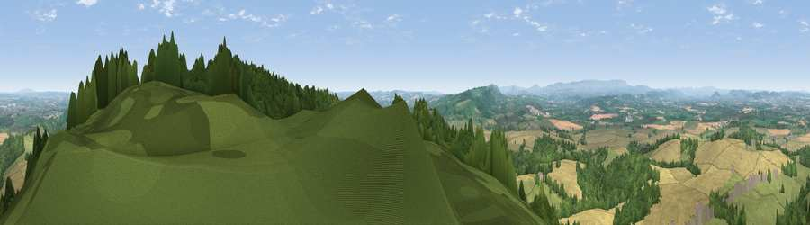

Viewpoint near Callow
#2257 in England · top 7% of its area beats it · near CallowWhere it is
The exact computed spot (SO 50075 33075). Click the marker for map links.
The view, rendered

A 360° render of this exact spot computed from the terrain model, tree cover and land cover — summer colours, afternoon light, calibrated against photographs of famous viewpoints. Real trees, hedges and buildings will differ in detail.
The panorama
Grey silhouette: terrain skyline in each direction (720 bearings, Earth curvature and refraction included). Dashed green: skyline with trees (+15 m) and buildings (+8 m) as obstacles. Blue strip: how far the ground is visible on each bearing.
Where the view opens
Wedge length = distance to the farthest visible ground on that bearing (vegetation-aware). Rings at 10, 25 and 50 km.
What fills the view
37% cropland · 33% grassland · 27% woodland · 3% built-up
Angular shares of the visible panorama (visual magnitude), not map area. Landscape diversity 0.52 (0–1 Shannon).
Key numbers
More beautiful places nearby
The staircase of upgrades: each row has a higher view potential than everything closer. Driving times are estimates from straight-line distance, calibrated against real road routing — check an actual route before setting out.
| Place | Direction | Drive | Score |
|---|---|---|---|
| Viewpoint near Aconbury | E · 1 km | ~2 min | 76.5 |
| Viewpoint near Orcop Hill | SSW · 5 km | ~11 min | 79.9 |
| Viewpoint near Orcop Hill | SW · 6 km | ~13 min | 80.7 |
| Garway Hill | SW · 10 km | ~20 min | 84.6 |
| Millennium Hill | ENE · 27 km | ~43 min | 86.9 |
| Worcestershire Beacon | ENE · 29 km | ~46 min | 87.1 |
| Viewpoint near West Quantoxhead | SSW · 98 km | ~123 min | 87.9 |
| Viewpoint near West Quantoxhead | SSW · 99 km | ~123 min | 88.7 |
51.99387, -2.72853 · source: screening · position refined by local search. Computed location — check access rights before visiting.